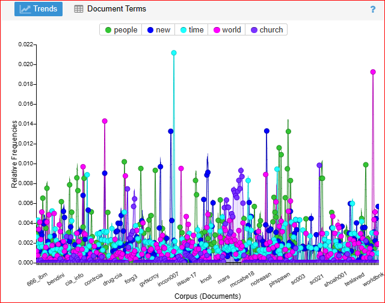

 Figure 4. Visual trends Throughout all documents
What we discovered
We ran all of our conspiracy
text files through Voyant so we could get a visual view of what words were
commonly associated with these files. This can help give us a better idea of
what things to look for as we dig deeper into our research of conspiracy
theories. Fig.1 was the files ran through Voyant at a Frequency of 25 the lowest
possible setting. The most common thing people think of when they think
conspiracy tends to be "government, money or religion" So there were not to many
suprises with the initial search. Fig.2 is a list visual of the top terms and
how frequently they appeared. Fig.3 We upped the Frequency to 205 to get more of
a variety of words commonly used in conspiracies. America or U.S seems to be the
most frequent country to appear in these conspiracy theories. It was also
fascinating how priest showed up 598 times and the pope appeared 974 times
throughout all these text file documents. Fig.4 is a graph view of all the
documents and the top 5 terms and how frequently they appeared in each document.
To the left, you can press the left and right buttons to view through all
the figures.
Network Analysis
All these connections
Our greatest challenge
for this project was going over all the conspiracy files and attempting to
connect the dots. Though it was not a difficult task; the sheer number of files
made it seem monumental. We managed to put together a decent network that shows
all the found entities and connects them to their relevant files. As expected,
there are connections everywhere. With the sheer number of organizations,
people, countries,locations mentioned, it would be suprising if there were no
connections at all.
Over to the right, if you click on the networt; you will have a better view of full network. You can zoom in, zoom out, see the names of nodes, view the connections between nodes, etc.
The subject of the government and
its many branches is inevitable when discussing conspiracy theories. During
network analysis, we have found many organizations documented, such as the FBI,
CIA, KGB, KFIA, etc. Some of the said organizations appear to have connections
to many files. For an example, we picked the FBI and its subnetwork of files.
Over to the right, you can click on one of the square blue nodes and view one of
the files where the FBI is referenced. The type of files you could go through
also relate to JFK's assassination, the WACO incident, the the Illumanati.
The FBI appears to be a element to a number of conspiracies, at least in the
ones regarding the United State's national security. Though, there appears to be
FBI-related files that connect to foreign policy as well. These files stand out
as dictator.xml and diplomat.xml. Looking deeper into these files,
we can see other nations are referenced as well, desptite not being detected by
our NLP pipelines. Further development into this project will hopefully polish
our findings, and uncover deep secrets about the FBI deepstate.
Very special thanks to TextFiles.com for their awesome directory of text files! They were the foundation of this project, and this would of fell apart without them.